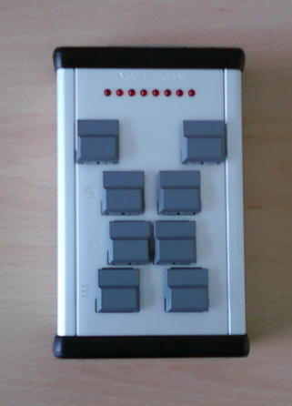

PsychoPy : Getting Responses
Created by Jibo He, <a>drhejibo@gmail.com/a>
Created by Jibo He, <a>drhejibo@gmail.com/a>
textString = "Press any key to continue\n" message = visual.TextStim(win, text=textString)
event.waitKeys()
#!/usr/bin/env python # -*- coding: utf-8 -*- # There is little experiment if the experimentee cannot give any input. # Here we changed our assignmet 1 a bit so that it waits for a keys, rather # than waiting 5 s. Note that we need to import the event library from # PsychoPy to make this work. from psychopy import core, visual, event ## Setup Section win = visual.Window([400,300], monitor="testMonitor") textString = "Press any key to continue\n" message = visual.TextStim(win, text=textString) ## Experiment Section message.draw() win.flip() c = event.waitKeys() # read a character message = visual.TextStim(win, text=textString + c[0]) message.draw() win.flip() event.waitKeys() ## Closing Section win.close() core.quit()
ResponseList =[] #...... inputs = event.waitKeys() print "inputs:",inputs ResponseList.extend(inputs)
outfile = open("response-n-back-task.txt",'w') for i in ResponseList: print >>outfile,i outfile.close()
''' By Jibo He @ WSU Sep 16,2014 demostrate a visual n-back task ''' from psychopy import visual, core, event import instructionFile import EndOfExperimentFile instructionFile.showInstruction('instruction.txt') # load the data source infile = open('datasource.csv','r') datasource ={} for line in infile.readlines()[1:]: trial,number = line.split(',') datasource[trial]=int(number.strip()) print datasource infile.close() #create a window to draw in myWin = visual.Window((800.0,800.0),allowGUI=False,winType='pyglet', monitor='testMonitor', units ='deg', screen=0) myWin.setRecordFrameIntervals() #choose some fonts. If a list is provided, the first font found will be used. fancy = ['Monotype Corsiva', 'Palace Script MT', 'Edwardian Script ITC'] ResponseList =[] #INITIALISE SOME STIMULI for trial in xrange(1,len(datasource)): number = visual.TextStim(myWin, color='#FFFFFF', text = str(datasource[str(trial)] ), units='norm', height=0.1, pos=[0, 0.0], alignHoriz='right',alignVert='top', font=fancy) number.draw() myWin.flip() inputs = event.waitKeys() print "inputs:",inputs ResponseList.extend(inputs) #pause, so you get a chance to see it! core.wait(5.0) outfile = open("response-n-back-task.txt",'w') for i in ResponseList: print >>outfile,i outfile.close() EndOfExperimentFile.showInstruction('EndOfExperimentInstruction.txt')
myMouse = event.Mouse() # will use myWin by default if myMouse.getPressed()[0]: myMouse.clickReset() print myMouse.getPos()
#!/usr/bin/env python2 from psychopy import visual, core, event from pyglet.gl import * width = 600 height = 600 myWin = visual.Window([width,height], color='white',units='pix',monitor='testMonitor') #This will set the windows units (pixels) to GL units glMatrixMode(GL_PROJECTION) glLoadIdentity() glOrtho(0, width, 0, height, -1, 1) glMatrixMode(GL_MODELVIEW) glLoadIdentity() glEnable(GL_BLEND) glBlendFunc(GL_ZERO, GL_SRC_COLOR) myMouse = event.Mouse() # will use myWin by default while True: #Triangle left glColor3f(1.0, 0.0, 0.0) glBegin(GL_TRIANGLES) glVertex3f(150, 550, 1) glVertex3f(50, 350, 1) glVertex3f(250, 350, -1) glEnd() if myMouse.getPressed()[0]: myMouse.clickReset() print myMouse.getPos() myWin.flip() core.quit()
~~~~
Faculty's Technical Support Group
Timing accuracy 1 ms
The buttonbox talks to your computer over a USB-cable

#!/usr/bin/env python ## Setup Section from psychopy import core, visual, event from rusocsci import buttonbox win = visual.Window([400,300], monitor="testMonitor") bb = buttonbox.Buttonbox() ## Experiment Section bb.waitButtons(maxWait = 10.0, buttonList=['A']) ## Cleanup Section core.quit()
''' By Jibo He @ WSU Sep 16,2014 demostrate a visual n-back task ''' from psychopy import visual, core, event import instructionFile import EndOfExperimentFile instructionFile.showInstruction('instruction.txt') # load the data source infile = open('datasource.csv','r') datasource ={} for line in infile.readlines()[1:]: trial,number = line.split(',') datasource[trial]=int(number.strip()) print datasource infile.close() #create a window to draw in myWin = visual.Window((800.0,800.0),allowGUI=False,winType='pyglet', monitor='testMonitor', units ='deg', screen=0) myWin.setRecordFrameIntervals() #choose some fonts. If a list is provided, the first font found will be used. fancy = ['Monotype Corsiva', 'Palace Script MT', 'Edwardian Script ITC'] #INITIALISE SOME STIMULI for trial in xrange(1,len(datasource)): number = visual.TextStim(myWin, color='#FFFFFF', text = str(datasource[str(trial)] ), units='norm', height=0.1, pos=[0, 0.0], alignHoriz='right',alignVert='top', font=fancy) number.draw() myWin.flip() #pause, so you get a chance to see it! core.wait(5.0) EndOfExperimentFile.showInstruction('EndOfExperimentInstruction.txt')
http://slideplayer.com/slide/9313647/
Posner Example code https://github.com/psychopy/posner
/